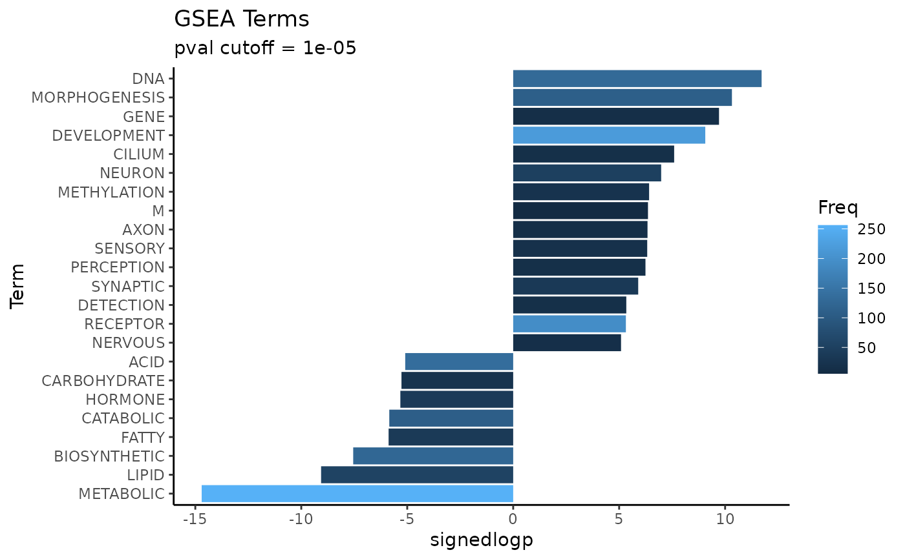

Get GSEA Squared terms/keywords
Usage
get_GSEAsq_terms(
df_GSEA,
savename = NULL,
filt_freq = c(5, 500),
signlogp_base = 10,
rep0 = .Machine$double.xmin,
verbose = TRUE,
plot = TRUE,
plot_pval = 1e-05,
plot_fmt = "png",
seed = 13
)Arguments
- df_GSEA
df/string; (path to) GSEA results with
pathwayandNEScolumns- savename
string; path to save output under, no extension
- filt_freq
num vector; frequency filter for terms,
filt_freq[1]is minimum frequency,filt_freq[2]is maximum frequency- signlogp_base
integer; log base when calculating signed log_base p metric
- rep0
numeric; value to replace
pval == 0results with, userep0 = 2.2e-16(rounded.Machine$double.eps) to be same as original function- verbose
logical;
TRUEto output terms as KS p-value is being calculated- plot
logical;
TRUEto output barplot of significant terms- plot_pval
numeric; include terms with
pval <= plot_pvalin barplot- plot_fmt
string; file extension to save plot as
- seed
numeric; randomization seed
Examples
library(dplyr)
#>
#> Attaching package: ‘dplyr’
#> The following objects are masked from ‘package:stats’:
#>
#> filter, lag
#> The following objects are masked from ‘package:base’:
#>
#> intersect, setdiff, setequal, union
# Load data
deseq_stats <- setNames(
airway_deseq_res[,"sign_log_p"],
airway_deseq_res[,"hgnc_symbol"]
)
pthwys <- GSEA_pathways
# Run (f)gsea
gsea_results <- fgsea::fgsea(
pathways = pthwys,
stats = deseq_stats,
eps = 0.0,
minSize = 15,
maxSize = 500) %>%
arrange(NES)
#> Warning: There are ties in the preranked stats (6.92% of the list).
#> The order of those tied genes will be arbitrary, which may produce unexpected results.
# Get terms
head(Rubrary::get_GSEAsq_terms(gsea_results, verbose = FALSE))

#> Term Freq pval ES signedlogp
#> 1 METABOLIC 256 1.998401e-15 -0.2663684 -14.699317
#> 2 DNA 130 1.895151e-12 0.3408557 11.722356
#> 3 MORPHOGENESIS 110 4.767242e-11 0.3370141 10.321733
#> 4 GENE 14 1.939423e-10 0.2515788 9.712327
#> 5 LIPID 55 8.623270e-10 -0.3655041 -9.064328
#> 6 DEVELOPMENT 219 8.624648e-10 0.2228497 9.064259